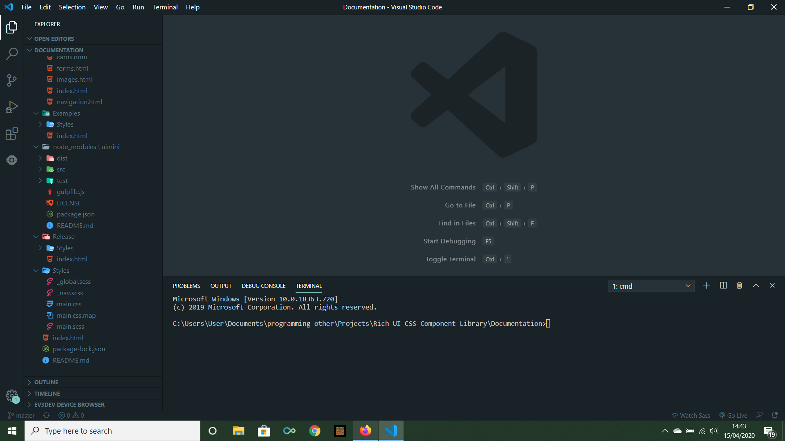

15/04/2020
The Ultimate Code Editor
Dear Developer, Today I decided to talk to you about one of the best code editors out there. Truly efficient Development always starts with the code editor. Of course you can probably develop a full CRUD app in notepad, but it's much easier when you have the correct tools for doing so. Having tools that are well equipt just makes the whole experience, as enjoyable as development should be - minus the errors and stress around that.
VS Code
The code editor I use is called Visual Studio Code . It is an editor made by Microsoft; it contains built-in debugging tools, Git and a built-in Terminal! VS Code also has hundreds of themes to choose from. The one I use is called "Community Material Theme High Contrast". This gives you a beautiful dark mode editor with enough contrast between the terminal and the screen. They also have Icon packs for the files; again I think "Material Icon Theme" is an awesome option. Visual Studio Code also allows you to install extensions; which help with development efficiency. Here are some of the extensions I use on a day to day basis in web development.
-
Live Server - One of the most amazing extensions you can have
when building websites with just HTML, CSS and JS. It allows you to
open the HTML file you are working on, and open it live in a browser.
This allows you to view changes live!!! JS Frameworks such as React
don't need this as you can use the
npm startfrom create-react-app. - Live Sass Compiler - I have never used any sort of compiled language before, I've also been lucky enough to have an IDE with shows errors at run time, however, when styling a web page I tend to use Sass as it has many useful functions; this is where the Sass compiler comes in handy, as websites can't run Sass code this extension converts your SCSS into CSS upon saving.
- Prettier - Prettier is another "edit on save" extension however this one help keep your code neat, removing extra whitespace, checking your brackets etc..
- Better Comments - The better comments extension allows you to create coloured comments for things like todo lists, errors to draw attention and questions.
- Bracket Pair Colorizer - The bracket colouriser, pairs the correct brackets, allowing for much more efficient debugging.
- Auto Rename Tag - The auto rename tag allows you to rename the opening and closing HTML tag at the same time.
- CSS Peek - Is an extension which allows you to see the CSS styling of Elements by inspecting them from the HTML file.
- EMMET - VScode by default comes with this. Emmet speeds up development by miles; it can autocomplete code and create large chunks of markup from a little bit of code.
- ES7 React/ Redux/ GraphQL/ React Native snippets - I've only recently got into React JS, however, this snippet library, speeds up the boring code and lets you focus on the rest.
This is why VS Code is one of the best code editors for web development. Projects would take me absolutely ages without Emmet and the other extensions. Not only extensions, but it also has lots of keyboard shortcuts to make your life as a dev much easier.
- Holding Shift + alt + down arrow allows you to quickly copy lines of code.
- Holding Alt while clicking parts of code, allows you to type in multiple places at once.
Along with Web Development I use VS Code for Python programming - unless I'm using the default IDLE which comes with python 😂. For Python development in VS Code, they have the python extension - This just show that the VS Code Devs had Web Development in mind. Useful python extensions include: AREPL which is almost like a silent debugging tool and Python-autopep8 which like Prettier needs the "format on save setting" enabled. It formats your python code to abide by the PEP-8 code standards for Python.
Conclusion
The Devs over at Microsoft have spent a lot of time perfecting their
code editor, to make it as useful to developers worldwide. Not only that
but they also allow you to type code . into a command
prompt within a directory to automatically open a VS Code window.